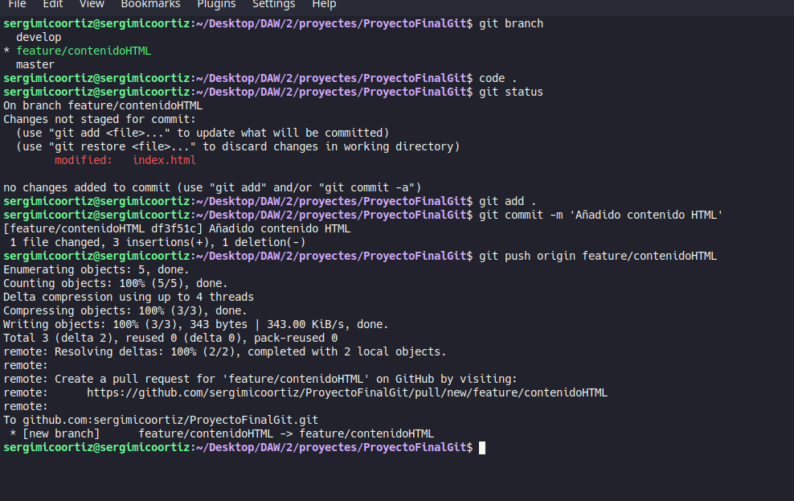

Introducción
¿Que es git?
Git es un software de control de versiones diseñado por Linus Torvalds, pensando en la eficiencia, la confiabilidad y compatibilidad del mantenimiento de versiones de aplicaciones cuando estas tienen un gran número de archivos de código fuente. Su propósito es llevar registro de los cambios en archivos de computadora incluyendo coordinar el trabajo que varias personas realizan sobre archivos compartidos en un repositorio de código.
¿Que es git flow?
Git Flow es una estrategia creada para mejorar la organización de Branchs (ramificaciones) dentro del repositorio y, de esta forma, dar más fluidez al proceso de nuevos Features y Releases.
Creación del proyecto
He creado el proyecto usando html5-boilerplate siguiendo los pasos marcados en su github.
He arrancado el proyecto para verificar que todo funcionara correctamente, además de que de antemano he realizado un npm install.
Primer commit
Después de que el usuario 1 añadiera su parte en el proyecto procedemos a realizar un primer comit por lo que realizamos un git init para inicializar el repositorio y el usuario 1 realiza el commit.

Añadimos un nuevo repositorio remoto al proyecto utilizando el comando git remote add. Para posteriormente realizar un push a este repositorio remoto que se encuentra alojado en github, realizamos este push sobre la rama master.
Usuario 1 hooks
He instalado husky en el proyecto y posteriormente he creado los hooks prepare-commit-msg y post-checkout. He tenido problemas con el hook del msg haciéndolo con bash por lo que al final he decidido reutilizar el que tenía hecho en pyton de una de las actividades anteriores.

He realizado un commit con los hooks para posteriormente realizar un push.
Git Flow
He creado la rama develop y la he subido al repositorio remoto.

Features usuario 2
He creado la rama feature/contenidoHTML desde la rama develop y me he posicionado sobre ella.
Una vez me he situado sobre la rama y de haber añadido la feature he realizado un commit sobre su rama para más tarde subirla a github con un push.
Después de realizar el push, he creado una pull request en github en la cual realizo un merge de la rama feature/contenidoHTML con la rama develop. La pull request menciona la issue #1 que he creado con anterioridad.
Después de realizar el merge, github me daba la posibilidad de eliminar la rama. Cosa que he hecho.
He creado la rama feature/atributosHTML desde la rama develop y me he posicionado sobre ella.
He realizado el commit con los respectivos cambios en la rama y además he realizado un push para subir los cambios a github.
He instalado eslint y eslint-plugin-html como dependencias de desarrollo.
He configurado eslint (fichero .eslintrc.json) y comprobado que funcionara correctamente. La configuración comprueba que el indentado se realice con 4 espacios.
He creado el hook pre-commit además de añadir un script al package.json que ejecita eslint.
He realizado un commit con el eslint además de subir dicho commit a la rama feature/atributosHTML.
De igual forma que con la anterior feature he realizado una pull request para esta.
Después de realizar la pull request he cerrado la issue relacionada con la feature en este caso la #2.
Features usuario 3
Me he situado en la rama develop y he realizado un pull para obtener los cambios de los anteriores merges.
He creado la rama de la feature para los estilos css desde la rama develop, y luego de realizar los respectivos cambios he realizado un commit y un push.
He realizado el merge de la feature en la rama develop. El merge es el que resuelve la issue: #5.
Release V1.0
Me he posicionado sobre la rama develop y la he actualizado para seguidamente crear la rama release/1.0

He colocado una tag al último commit en el cual se sitúa la rama de release además de que he subido esta rama junto a la tag a github.
He realizado la pull request para juntar la rama release con la rama master. Al no haber cambiado nada dentro de la propia rama release no ha sido necesario realizar un merge también con la rama develop.
Hotfix
Después de actualizar la rama master y situarme sobre ella, he creado la rama para el hotfix. Después de realizar el hotfix he realizado un commit y he subido la rama a github. El hotfix tiene una issue asignada la cual es la issue #8.
Después de subir el hotfix a github, he realizado dos pull request una para incluir el hotfix en la rama master y otra para incluirlo en la rama develop.
Este es el estado final del proyecto en github en el cual están asociadas todas las issues del repositorio.